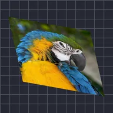

اسٹریچ ایکسس

لیئر کو کسی بھی سمت میں کھینچتا ہے۔
سیٹنگز
| سیٹنگ | قسم | رینج | ڈیفالٹ |
|---|---|---|---|
| اسکیل | نمبر | 0.01 سے 50 تک | 1 |
| اینگل | زاویہ | -3600° سے 3600° تک | 0° |
| لیئر پر ماسک | آن یا آف | – | آف |

لیئر کو کسی بھی سمت میں کھینچتا ہے۔
| سیٹنگ | قسم | رینج | ڈیفالٹ |
|---|---|---|---|
| اسکیل | نمبر | 0.01 سے 50 تک | 1 |
| اینگل | زاویہ | -3600° سے 3600° تک | 0° |
| لیئر پر ماسک | آن یا آف | – | آف |